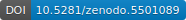
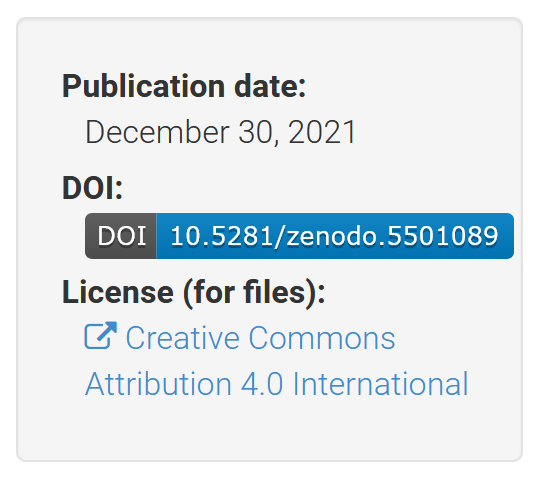

Release Management
Once your code or data has evolved to a state of readiness, you can release it. How to do so depends on the audience and intended use of the code or data. For example, you may release to:
Deploy code into production.
Make available a new version to users.
Provide a dataset to project partners.
Release a citable version of a code base or dataset to the public.
…
Typically, releases are done by the owner of the code base or dataset. For workflows with multiple collaborators where ownership is shared, a capable collaborator should take on the role of release manager.
Tagging
Using Git’s tagging feature you can attach a label to a commit (a particular version of the tree of files under management) so that you can easily return to that particular version later. When people or automation scripts watching the repository understand the name convention chosen for tags, tagging can suffice for making a release. Typically, you will want to adopt some versioning scheme to name the tags.
GitHub/GitLab Release Management
With a Git repository hosted on GitHub or GitLab, you can manage releases through the web interface via which the repository is administered. Both GitHub and GitLab allow you to create a tag (see above), write a release description, and have the release show under a permalink together with downloadable assets. For details see the documentation on GitHub release management and GitLab releases. This allows people to browse releases, view release notes, and download release assets via the GitHub/GitLab web interface (in addition to robustly fetching the release via a Git client).
The web interface for managing the repository provided by GitHub and GitLab contains settings that control whether the repository and hence the release is public or private. When private, only select users are given access. Users that have access can download the entirety of the repository.
This means that the release manager should be very mindful and control what subset of information flows into the release repository:
Only a well-tested version should be released.
Privacy-sensitive information may need to be filtered out.
Security-sensitive information such as credentials or tokens should not be exposed to the public nor to unauthorized collaborators.
…
Typically, the release manager does so by pushing only a cleaned up well-validated branch from his or her local repository to the GitHub/GitLab repository.
Warning
Git allows you to go back in time. If the last commit is clean, but any of the prior commits in the branch being made public contain sensitive information, that information can be uncovered by anyone.
In summary, the release manager can connect a clean release branch in his or her local repository to a GitHub or GitLab repository, prepare the release locally in that branch, and push the branch out once ready and validated. Then the manager uses the GitHub/GitLab web interface to write the release notes and define the tag.
Workflows
This discussion of Git branching workflows gives good sight on how these can support GitHub/GitLab release management.
Zenodo Release Management
To make your research output findable and citable, you can release it on Zenodo. Zenodo allows uploads of file sets up to 50GB in size, assists description with metadata, and provides a digital object identifier (DOI).
Your uploads can be grouped under one or more communities. LAMASUS research outputs should be published under the LAMASUS Zenodo community. Submissions will be verified before being accepted as part of the community. The submitter may first be contacted for clarification.
Tip
Use https://sandbox.zenodo.org as a playground to practice using Zenodo or to test scripts that use Zenodo. This sandbox environment does not allocate permanent DOIs nor does it generate permanent records.
The following subsections detail various ways to use Zenodo as part of your release workflow.
Zenodo only
When your research output is not evolving and does not need to be downloadable in a robust way that can be scripted, then there is no need to manage the files with Git and you can just upload to Zenodo only, specify the metadata, and be done. Be sure to comply with the metadata standards and pick the right community or communities to publish under. To do so:
Log in to Zenodo
Click on the
New Upload.Fill in the metadata form that appears.
Upload your files.
Click on
Publish.
Releasing new versions
Zenodo allows you to release new versions of your research output as updates
under the same record. To do so manually, select a published record, click on
the New version button, and proceed to upload files and adjust the metadata.
Zenodo generates separate DOIs for each version and also a shared DOI for the
entire series of versions.
This feature is called DOI versioning. See the DOI versioning FAQ for further details.
Automatic Zenodo upload of GitHub release
When releasing on GitHub, you can use the Zenodo-GitHub integration to automatically archive your GitHub releases on Zenodo and have Zenodo generate a new DOI for each release. Each additional release is logged as a new version under the Zenodo record.
You can add metadata to your GitHub repository release
via a .zenodo.json file that is used by Zenodo to automatically populate the
metadata of the publication record. For LAMASUS you can use the below example
as a starting template for such a JSON file.
{
"creators": [
{
"orcid": "0004-0032-1089-6543",
"affiliation": "Land management research institute",
"name": "Bauer, Bernd"
},
{
"orcid": "0005-0043-2108-7643",
"affiliation": "Land management research institute",
"name": "Tilling, Tina"
}
],
"license": "Apache-2.0",
"title": "LUM drivers",
"related_identifiers": [
{
"scheme": "doi",
"identifier": "10.1234/software.paper.5678",
"relation": "isDocumentedBy",
"resource_type": "publication-article"
}
],
"keywords": ["drivers", "land use", "agriculture"],
"communities": [
{"identifier": "lamasus"}
],
"grants": [{"id":"101060423"}]
}
Note
Zenodo can also automatically populate metadata from a Citation File Format (CFF) file included in the repository.
Tip
You can use cffconvert to convert CFF files to Zenodo JSON among other formats. That provides a starting point to which a few fields not present in the CFF schema will need to be added.
Manual Zenodo upload of a Git release
When your research output is evolving and under Git management, you can make your release citable with a Zenodo DOI, and make it findable and downloadable via Zenodo. To do so manually:
First reserve a DOI. Log in to Zenodo, and click on the
New Uploadbutton. A form showing metadata and upload fields should appear. Under the Digital Object Identifier section clickReserve DOI.Or, when releasing a new version, select the published record holding the prior release, click on
New version, and under the Digital Object Identifier section clickReserve DOI.
Paste the DOI into a README and other documentation in your Git-managed file tree. You can turn the DOI into a clickable URL by prefixing it with
https://doi.org/. Typically, you will have a section in the documentation called “How to cite” where you want the DOI to appear.You can also include the DOI in a CFF file in your repository.
When the document file you are pasting the DOI into uses Markdown formatting — typically indicated by a
.mdfile extension — you can paste the DOI as a nice clickable badge like this oneby using a Markdown link that can easily be obtained from the DOI by formatting it like this:
[](https://doi.org/10.5281/zenodo.5501089)
Note
The number
5501089is from an example DOI and will be different for your DOI. The prefix10.5281may or may not be different as well.Commit and push these changes before making the release.
Make a release of the repository as per the instructions in the Tagging or GitHub/GitLab Release Management sections above.
Obtain a ZIP or other archive of the release. When you use GitHub or GitLab release management, such an archive is automatically created and downloadable from the release page. When you tag releases locally, archive a clean worktree corresponding to the release commit, and make sure that the
.githidden directory holding the local repository data store is excluded.Return to the Zenodo web form and upload the archive.
Complete the metadata fields.
Include a URL pointing to the Git repository or its release page.
Click on
Publish.
Tip
After publishing, when visiting the Zenodo web page of the publication record, on the right hand side you will see an information box like the one below.
{kind=link}
When clicking on the DOI badge inside the information box, Zenodo will pop up a web frame containing various badged and bare links to the record for various kinds of markup. These point to the publication record or its badge, and can be copied and pasted.